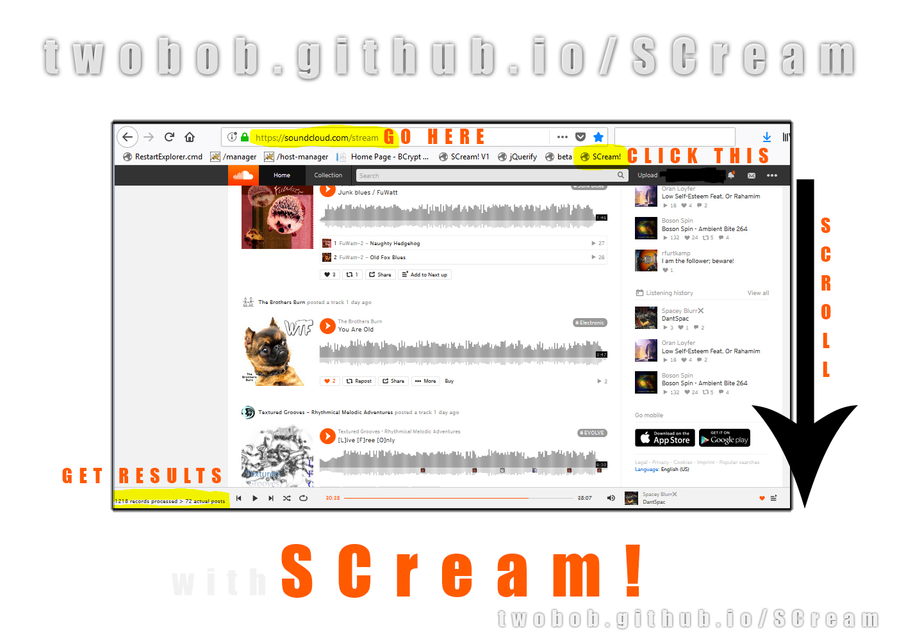

Remove reposts in stream
This bookmarklet will temporarily hide reposts from your SC stream
It is based on the work by Karl Swedberg and Matthew Reidsma, finally amended by Twobob.
Installing
To install, drag the link below to your bookmarks toolbar:
SCream!
- Navigate to your HOME page on SC and click the SCream! Bookmark button once.
- Every few seconds it will remove any reposted content, just scroll down as usual and wait for the cleanup
- Navigating to another page will leave it dormant, waiting for you to return to your stream
- Reloading the page will unload the bookmarklet - restoring all the hidden reposts.
- Simply click the button again to start the thing running when you need it
Issues
Please report any issues here https://github.com/twobob/SCream/issues